Trazabilidad de punta a punta
Cada producto fabricado tiene su ficha as-built: qué componentes, de qué lotes, de qué notas fiscales y proveedores. También el camino inverso: desde un lote se llega a todos los productos que lo usaron.
Planificación y control de la producción
Desde la necesidad de compra hasta la entrega al cliente, en un único sistema web: compras, recepción fiscal, inventario por lote, producción visual, calidad e indicadores — con trazabilidad completa de cada pieza.
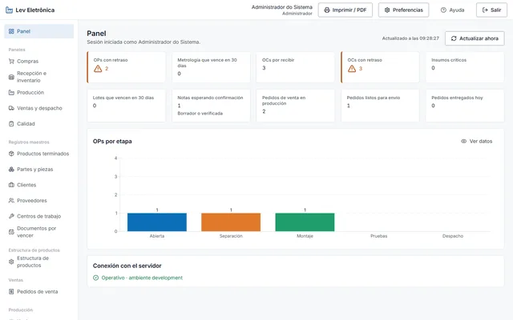
Diferenciales
PCP-Lev reúne en un solo lugar lo que normalmente queda disperso entre planillas, correos y sistemas desconectados — y mantiene el historial de todo.
Cada producto fabricado tiene su ficha as-built: qué componentes, de qué lotes, de qué notas fiscales y proveedores. También el camino inverso: desde un lote se llega a todos los productos que lo usaron.
Importe el XML de la NF-e, verifique ítem por ítem y confirme. El sistema vincula la nota a la orden de compra, señala divergencias y da entrada al inventario generando los lotes.
Órdenes de producción organizadas por etapa, con validaciones en cada paso, registro de pruebas, registro de horas por centro de trabajo y cierre con informes adjuntos.
El costo de cada orden concluida se calcula a partir de los lotes efectivamente consumidos, al precio de la nota de entrada — no por estimación. Márgenes y decisiones basados en números reales.
Indicadores de compras, inventario, producción, ventas y calidad, con período ajustable, actualización automática, tabla equivalente a cada gráfico y modo TV para monitores en la planta.
Perfiles con permisos detallados por módulo y acción, excepciones individuales con justificación, bloqueo por intentos, sesiones revocables al instante y secretos guardados de forma cifrada.
Toda inclusión, modificación y eliminación queda registrada con usuario, fecha y la comparación campo a campo entre el antes y el después. Nada se pierde, nada se modifica sin dejar rastro.
Fotos, planos, informes, certificados y contratos adjuntos a piezas, órdenes y proveedores — con alerta de todo lo que está por vencer, incluida la calibración de los instrumentos.
Cualquier pantalla puede imprimirse o guardarse en PDF con encabezado de la empresa, usuario y fecha — gráficos incluidos, ajustados a la hoja.
Temas claro, oscuro y de alto contraste, tamaño de fuente ajustable, navegación por teclado, ayuda contextual en todas las pantallas y formatos regionales de fecha y número configurables.
Estructuras de producto versionadas, con la versión vigente a su elección, alimentan el cálculo de necesidad de compra; en un clic, la necesidad se convierte en cotización y la cotización en orden de compra.
Funciona en cualquier servidor con Docker, con HTTPS automático, base de datos que se actualiza sola en cada versión y rutina de copia de seguridad y restauración documentada.
Flujo integrado
Cada etapa alimenta a la siguiente. Lo que entra por la nota fiscal es lo mismo que sale en el producto — y todo se puede consultar después.
Destacados
Algunas pantallas que muestran cómo PCP-Lev resuelve problemas comunes de la producción.
La ficha de trazabilidad reúne, para cada unidad producida, los componentes, lotes, proveedores y notas fiscales de origen — además de los informes de prueba.
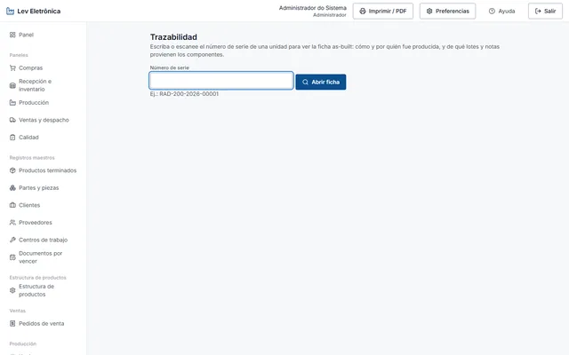
El XML de la nota fiscal se importa y se vincula a la orden de compra. La verificación física señala faltantes y sobrantes antes de cualquier movimiento en el inventario.

El Kanban muestra cada orden en su etapa. Avanzar exige lo que la etapa pide — pruebas registradas, materiales consumidos — y el sistema calcula el costo real al concluir.
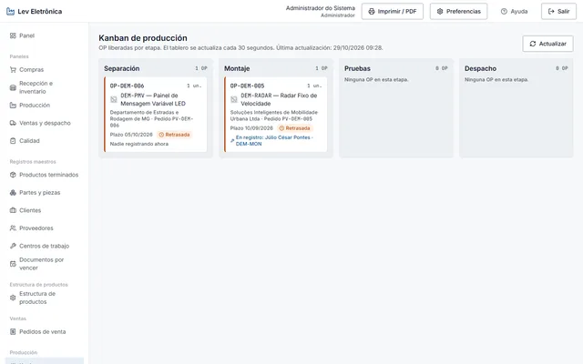
Cada área tiene su panel, habilitado por permiso. Gráficos coloreados por categoría, acompañados de tabla equivalente, período ajustable y modo TV con actualización automática.
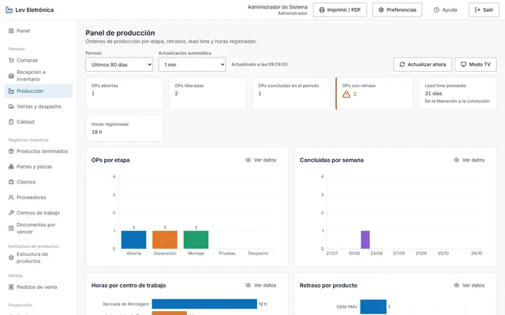
Cada usuario elige el idioma de su interfaz en las preferencias. La ayuda contextual y los mensajes del sistema también aparecen en el idioma elegido, sin afectar a los demás usuarios.
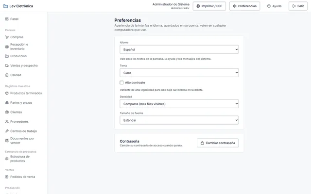
Pantallas del sistema
74 pantallas organizadas por módulo. Haga clic en cualquier imagen para ampliarla; use las flechas del teclado para navegar.
Nota: algunas capturas aún se muestran en portugués.
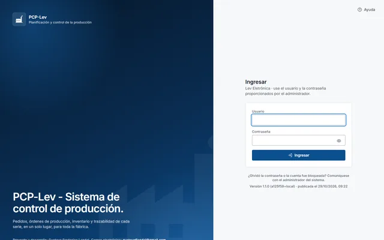
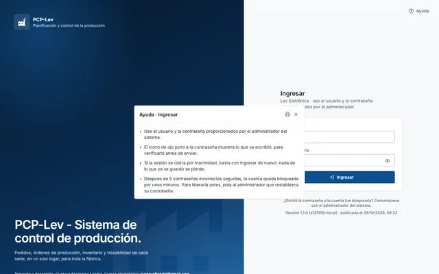


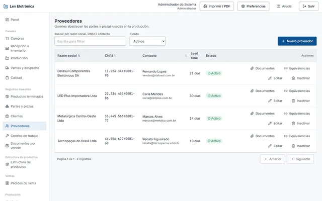


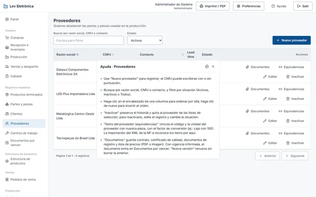
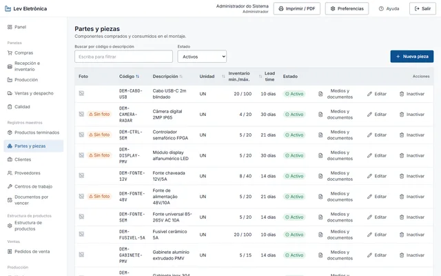

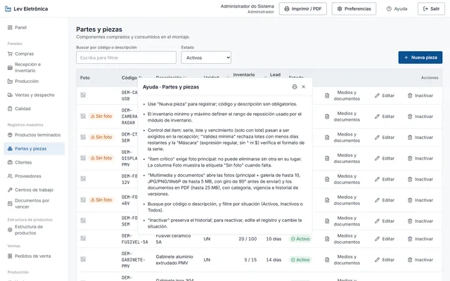
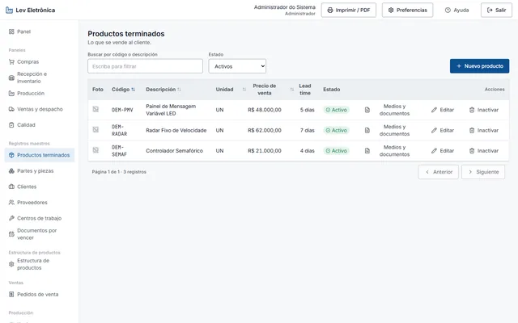

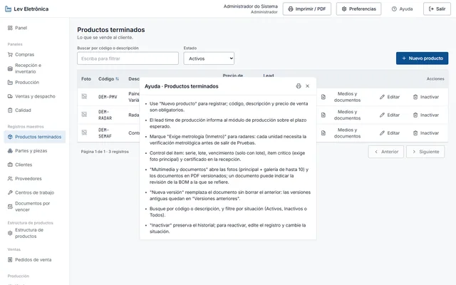
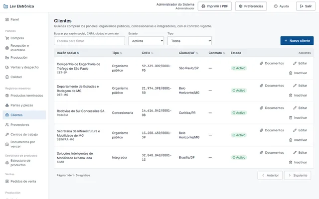
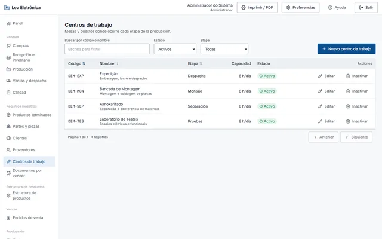
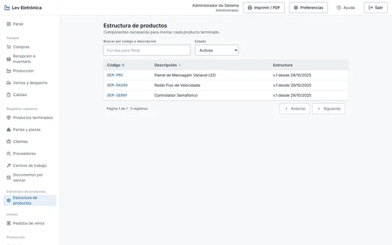
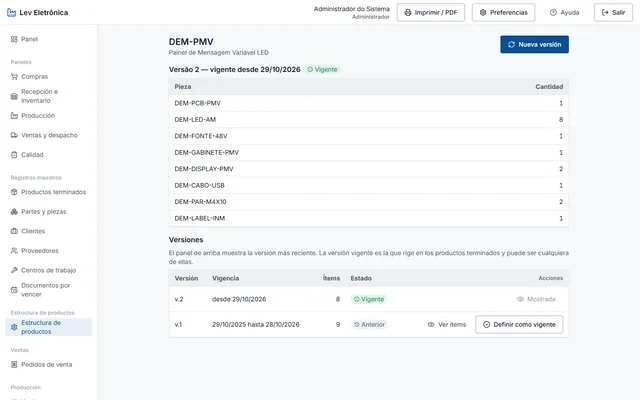
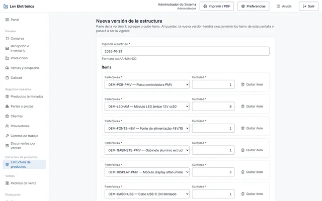
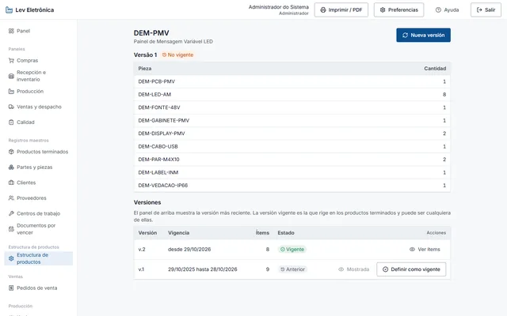
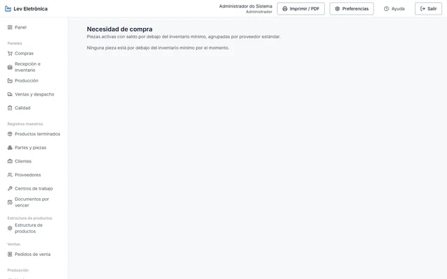


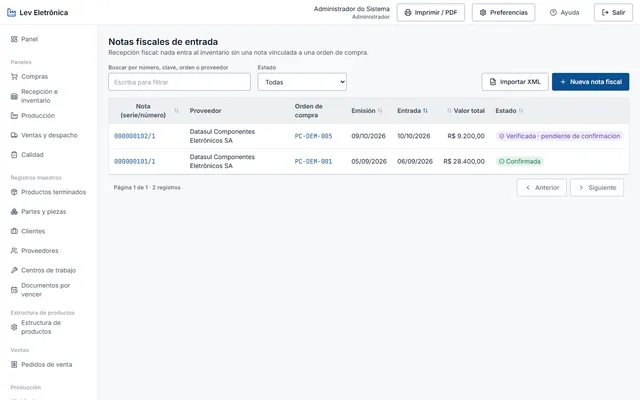


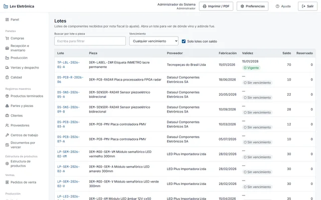


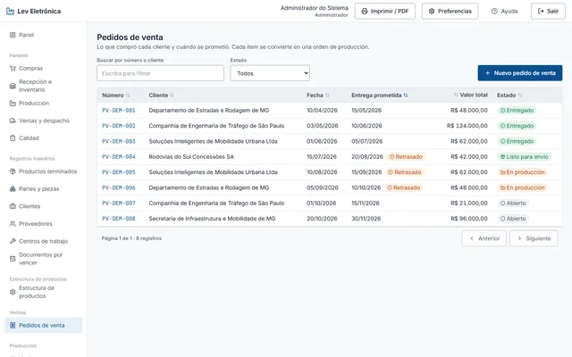


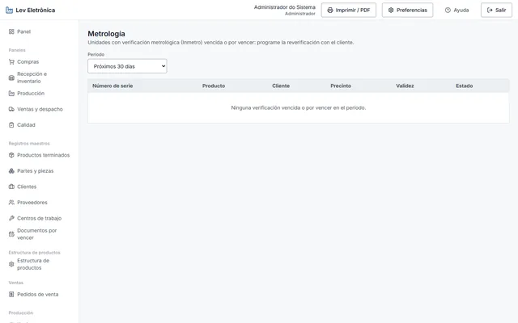


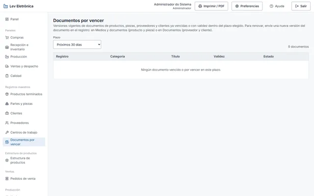


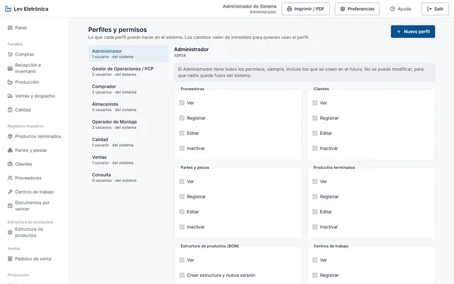
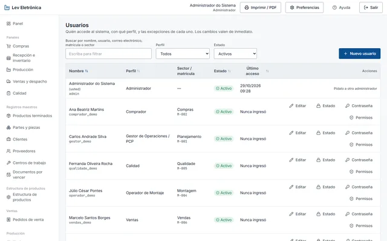

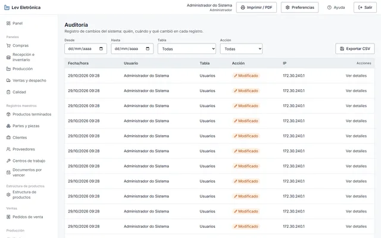

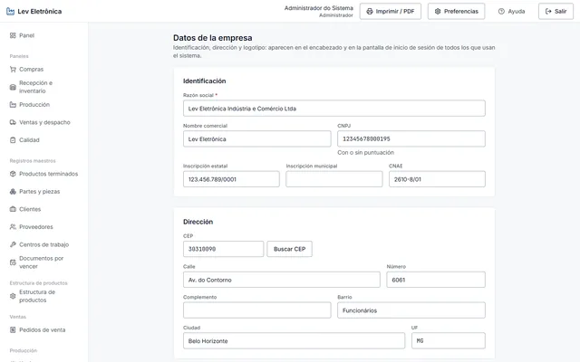
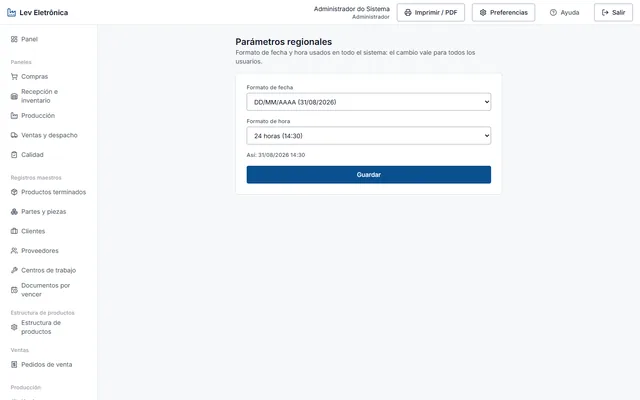

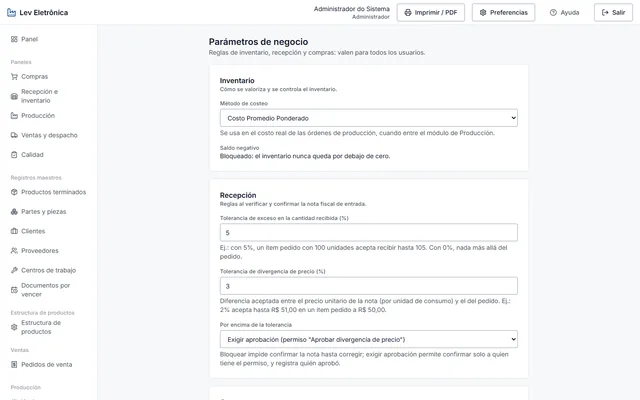
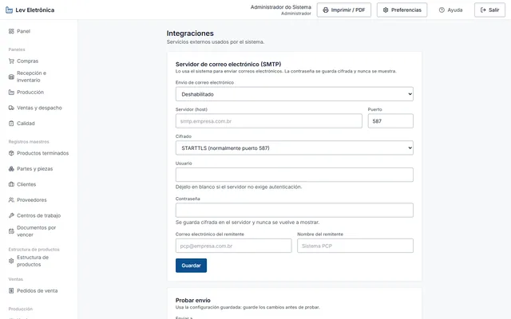
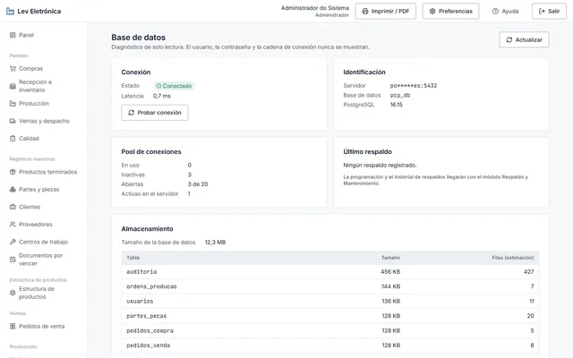


Tecnología
Arquitectura en capas, pruebas automatizadas en todos los niveles e implantación reproducible.